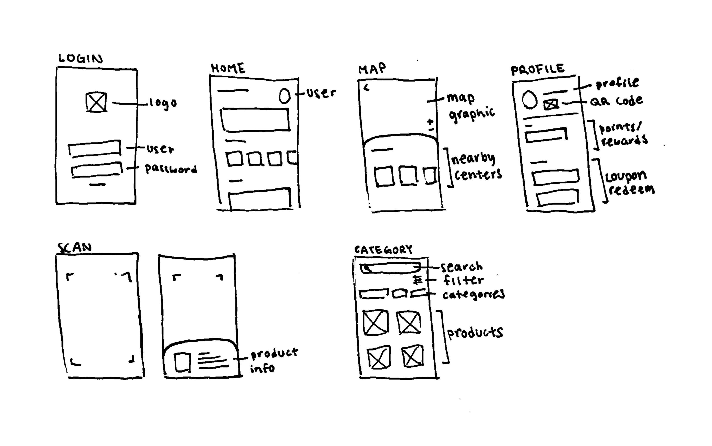
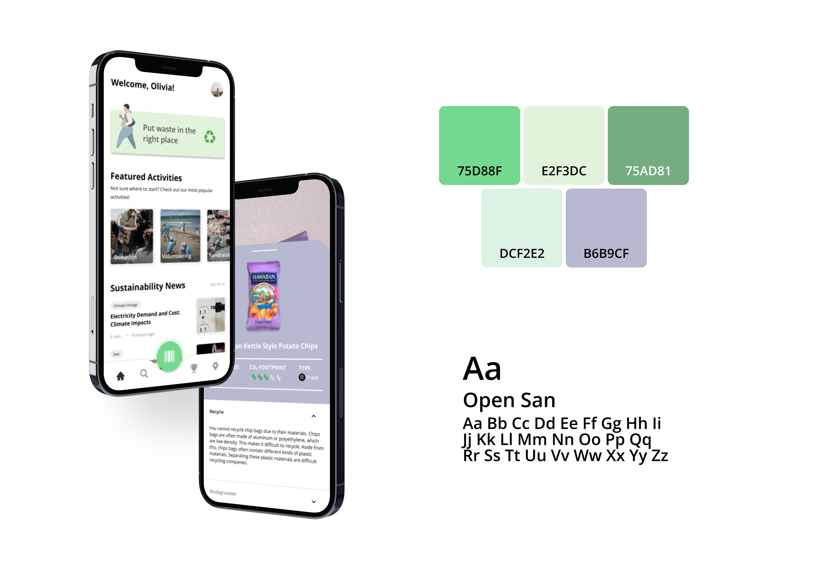
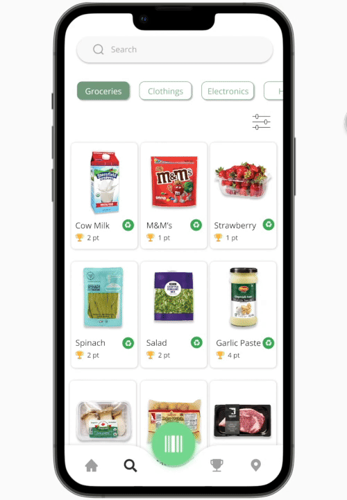

Project Overview.
Being eco-friendly isn't simple for everyone, and we know that. With the lack of education, convenient access, and financial incentive to recycle, taking a step towards a sustainable lifestyle may seem daunting to people. Identifying recyclable items can be confusing, and finding nearby recycling facilities can pose an inconvenience. There is also no encouragement or motivation to alter their behavior to begin recycling.
The solution? Carbonology is an app that provides convenient access to important sustainability information of common household products and aims to help consumers lead a more sustainable life.
Jumping into user research.
Through surveys and interviews
My team and I surveyed people on their habits of recycling and conscious purchases. I asked them questions about:
- the frequency they recycle
- their perspective on sustainability
- their consideration of carbon footprint when purchasing items
- their thoughts on why Americans don't recycle
After compiling our findings into an affinity map, our survey revealed two problems individuals encounter: educational and financial.
Through articles and studies
To gather more insights about the challenge, I analyzed articles and studies about the American perception on recycling, and learned financial incentives affect behavior towards recycling, and people face confusion when recycling items.
"Financial incentives are more effective for among consumers with lower levels of environmental knowledge, while nonfinancial incentives are more effective among consumers with higher levels"
— Li, 2021
“While done with good intentions, many Americans are practicing aspirational recycling - tossing things into recycling bins that they think should be recycled, rather than what can be recycled.”
— Dr. Paul Gilman, chief sustainability officer at Covanta
Insights of research.
No incentive to recycle
There is currently no motivation for Americans to go through the effort to recycle.
Lack of education
There are too many factors to consider when recycling for what items can or cannot be recycled.
Inadequate access
Recycling is a hassle because there are rarely nearby recycling bins in public or recycling centers.
Ideation.
Sketches
I drafted quick sketches on features that addressed factors of incentives, education, and access to recycling. Given the limited time, my team and I moved quickly from here.

Solutions.
Rewards page
Gain reward points for recycling to redeem for coupons through personalized QR code
Home page
Access news related to sustainability, discover events to join, and become involved in their communities.
Scan page
Scan product's barcode to learn the product's recyclability, carbon footprint, and proper disposal process.
Search page
Find and filter results to find sustainablity information on products.
Resource page
Search directions to local compost, recycling, and donation centers.
Brand identity.
Carbonology primarily uses green due to the color's frequent association with the environment. The app also includes various tints and shades of green and purple to create a calming color palette with cool tone colors. Open Sans was chosen for its easy readability.

Stay updated.
Stay updated on community events to participate in and news of current events.
Learn more.
Discover a product's recyclability, biodegration, carbon footprint, and alternative choices.

Scan a product's barcode.
For convenience, scanning the product's barcode to learn about its level of sustainability and alternative choices.
Rewards and redeem.
Earn points through recycling and redeem coupons to use for items on your next grocery shopping trip.
Nearby.
Explore local recycling, compost, and donation centers close by.
Takeaways.
Understand the expectations
Because of the short timeline, it was crucial my teammates and I understood the expectations at the beginning and the goals of each step throughout the project. Doing this allowed me to focus on my work, and both collaborate smoothly with others and work independently.
Quick iteration
My team and I had to quickly focus on a solution to fit out users from the start. Creating quick, different iterations helped brainstorm and explore the variations to refine on, giving opportunities to select the best version that fits the user's needs, wants, and addresses their challenges.